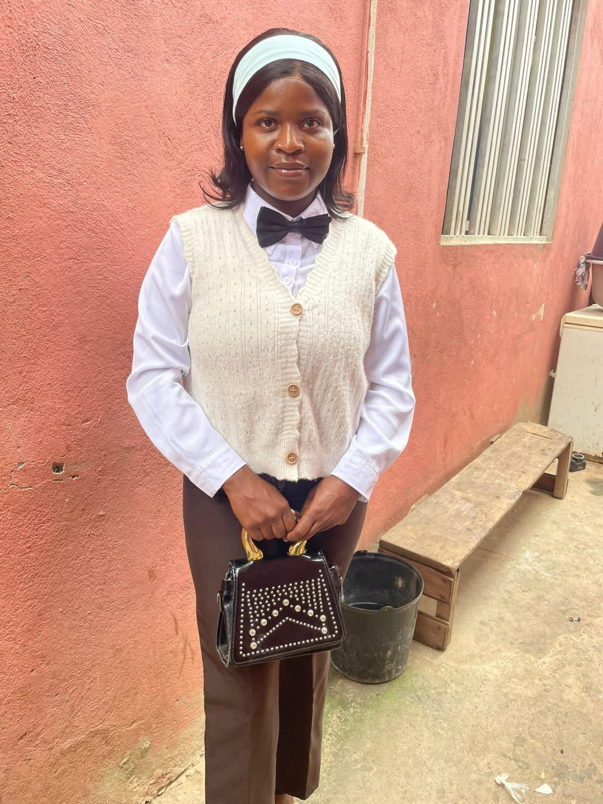

Lidera a organização com foco em inovação, sustentabilidade e excelência operacional, definindo a visão estratégica da empresa e garantindo o cumprimento da missão ambiental.
Responsábel da Área Comercial e Relacionamento com Clientes
Teresa Armindo
Responsável por angariar novos clientes (empresas, condomínios, instituições), gerir contratos e atender solicitações, faz sentido visto que agora tens formulários de pedidos de serviço a chegar
Responsável da Área Operacional e de Campo
Paulina Artur
Responsável pela execução das operações diárias de recolha, transporte e gestão de resíduos, coordenando as equipas de campo e assegurando a eficiência dos serviços prestados aos clientes.
Área Administrativa e Financeira
Tonison Mambemba
Responsável pela gestão de recursos, faturação, folha de pagamento e logística interna da empresa
Responsável da Área Técnica e Segurança
Aida Samuel
Garante o cumprimento das normas técnicas e de segurança em todas as operações, supervisionando os procedimentos de tratamento de resíduos e a proteção da equipa e do meio ambiente.

Uma equipe preparada para estabelecer um ambiente mais limpo e saudável